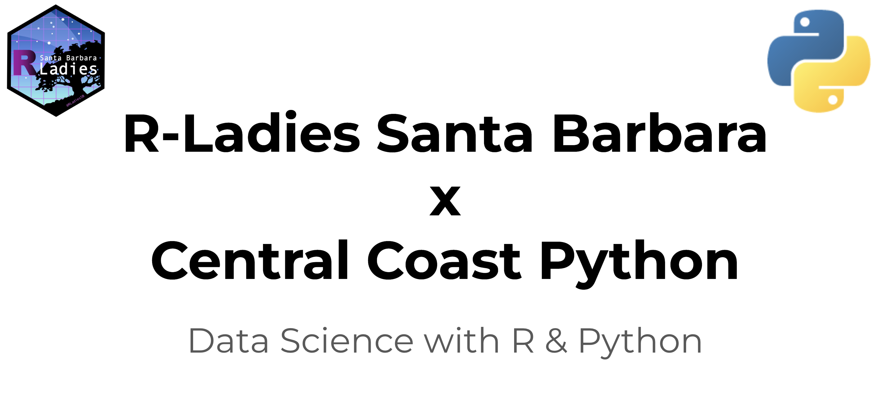

![]()

Overview
This workshop was the result of a collaborative effort between the R-Ladies Santa Barbara and Central Coast Python Meetup groups. A special thanks to Sean Helvey for connecting with us to make this happen!
Abstract
Python can be a powerful alternative/complementary language to R, and while we here at R-Ladies are certainly partial to the latter, adding another language to our data science toolkit is something we are always excited for. In this R to Python (and vice versa) translation workshop, we learn to wrangle and visualize the same dataset using both languages.